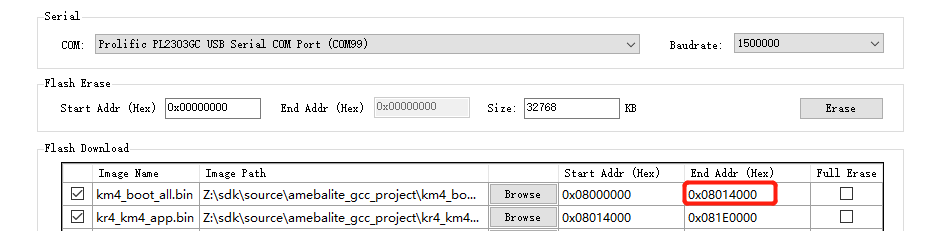

How to Modify Memory Layout
The following memory size can be modified:
Bootloader
BD_RAM
BD_PSRAM
Heap
Modifying Bootloader Size
If you need to enlarge the size of KM4_BOOT_RAM_S, the modified KM4_BOOT_RAM_S size should be 4KB aligned because the MPC protection is protected in unit 4KB.
Follow the steps to modify the size of the bootloader:
Modify the CONFIG Link Option in menuconfig to choose whether to place the bootloader (IMG1) on Flash or SRAM.
When SRAM is selected, the size of KM4_BOOTLOADER_RAM_S is 24KB.
When Flash is selected, the size of KM4_BOOTLOADER_RAM_S is 4KB.

Change the size of KM4_BOOTLOADER_RAM_S by modifying KM4_IMG1_SIZE in
{SDK}\amebalite_gcc_project\amebalite_layout.ld./* IMG1 Size */ #if defined(CONFIG_IMG1_FLASH) #define KM4_IMG1_SIZE KBYTES(4) #else #define KM4_IMG1_SIZE KBYTES(24) #endif
Re-build the project to generate the bootloader.
Modify the end address of
km4_boot_all.binif the bootloader is too large, and download the new bootloader.
{kind=link}
After that, the boot ROM will load the new bootloader if the version of new bootloader is bigger.
Modifying BD_RAM Size
Follow the steps to modify the size of KM4 BD_RAM:
Modify the running position of IMG2 in menuconfig. Any option with SRAM is acceptable.

Modify RAM_KM4_IMG2_SIZE or RAM_KR4_IMG2_SIZE in
{SDK}\amebalite_gcc_project\amebalite_layout.ldto change the end address of KM4_BD_RAM./* IMG2 Size*/ #if defined(CONFIG_AP_CORE_KM4) #define RAM_KR4_IMG2_SIZE KBYTES(96) #define KM4_IMG2_RAM_START (KM4_RAM_TZ_SECURE_START + RAM_KM4_IMG3_SIZE) /* 0x20021400 ~ 0x20068000 | 0x2000D000 ~ 0x20068000*/ #define KR4_IMG2_RAM_START (SRAM_END - RAM_KR4_IMG2_SIZE) /* 0x20068000 ~ 0x20078000 | 0x20068000 ~ 0x20078000*/ #define RAM_KM4_IMG2_SIZE (KR4_IMG2_RAM_START - KM4_IMG2_RAM_START) #else #define RAM_KM4_IMG2_SIZE KBYTES(96) #define KM4_IMG2_RAM_START (KM4_RAM_TZ_SECURE_START + RAM_KM4_IMG3_SIZE) /* 0x20021400 ~ 0x20039400 | 0x2000D000 ~ 0x20025000*/ #define KR4_IMG2_RAM_START (KM4_IMG2_RAM_START + RAM_KM4_IMG2_SIZE) /* 0x20039400 ~ 0x20078000 | 0x20025000 ~ 0x20078000*/ #define RAM_KR4_IMG2_SIZE (SRAM_END - KR4_IMG2_RAM_START) #endif
Modifying BD_PSRAM Size
Follow the steps to modify the size of KM4 BD_PSRAM:
Modify the running position of IMG2 in menuconfig. Any option with PSRAM is acceptable.
Modify PSRAM_KM4_IMG2_SIZE in
{SDK}\amebalite_gcc_project\amebalite_layout.ldto change the end address of KM4_BD_PSRAM.#define PSRAM_KM4_IMG2_SIZE (KBYTES(1536) - (PSRAM_TZ_NSC_SIZE + PSRAM_TZ_ENTRY_SIZE + PSRAM_KM4_IMG3_SIZE)) #define KM4_IMG2_PSRAM_START (KM4_PSRAM_TZ_SECURE_START + PSRAM_KM4_IMG3_SIZE) /* 0x60010000 ~ 0x60180000 | 0x60000000 ~ 0x60180000*/ #define KR4_IMG2_PSRAM_START (KM4_IMG2_PSRAM_START + PSRAM_KM4_IMG2_SIZE) /* 0x60180000 ~ 0x60180000 | 0x60180000 ~ 0x60300000*/ #define PSRAM_KR4_IMG2_SIZE (PSRAM_DSP_START - KR4_
Extending Heap Size
The heap size consists of multi-blocks and is passed to the operating system by os_heap_init() in {SDK}\component\os\freerto\freertos_heap5_config.c.
By default, PSRAM_HEAP1_START is an invalid address and PSRAM_HEAP1_SIZE is 0.
KM4_PSRAM_HEAP_EXT (rwx) : ORIGIN = 0x6FFFFFFF, LENGTH = 0x6FFFFFFF - 0x6FFFFFFF /* KM4 PSRAM HEAP EXT */ KR4_PSRAM_HEAP_EXT (rwx) : ORIGIN = 0x6FFFFFFF, LENGTH = 0x6FFFFFFF - 0x6FFFFFFF /* KR4 PSRAM HEAP EXT */
If the heap of KM4 is not enough, follow the steps to extend the heap size of KM4:
Define Heap Start and Heap Size for some unused areas in
amebalite_layout.ld.Use
os_heap_add()to add the area to the heap array.The address shall be a valid value in PSRAM
Re-build the project and download the new image to let KM4 use the extended heap.
bool os_heap_add(u8 *start_addr, size_t heap_size);
Note
The symbols defined in linker script (
amebalite_layout.ld) need to be declared inameba_boot.hbefore they can be used.If the heap of KR4 is not enough, the extension method is similar.